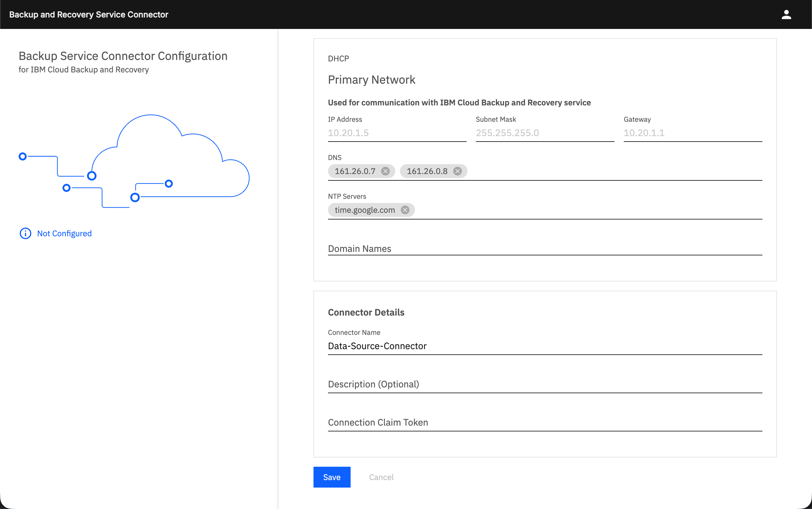

Which backup when
By the end you can pick between a snapshot, VPC Backup, file share replication and IBM Cloud Backup and Recovery for a stated need, and say what each one cannot do.
Northgate Freight is a made-up haulier. In vSphere it had one answer for protecting a VM. In VPC there are four, and they are not interchangeable. The company is made up; the output is real.
The comparison rests on IBM's pages. The recorded runs come from a lab account. Unit 4.3 covered snapshots and VPC Backup in detail.
Four options side by side
A table compares them. Here each option is one block of its rows. Select a box to see what it is for and which lines describe it. You can also click a line.
Snapshot
One copy now, made by hand, of one volume or of several in a consistency group. It stays until you delete it. Restore gives a new volume.
Watch for this. It is crash-consistent, not application-consistent.
VPC Backup
Snapshots made by a policy on a cron schedule, chosen by tag, deleted after a set period or count. Cross-region copy works for block volumes, not for file shares.
Watch for this. IBM's Backup and Recovery documents say it is a different service from Backup and Recovery. The names get confused.
File share replication
A copy of a file share in another zone, or another region in the same account, refreshed on a schedule as often as every 15 minutes. You restore by failing over to the replica.
From vSphere: Site Recovery Manager maps roughly to snapshots, replicas, Backup and Recovery and a recovery region together. A rough mapping, not an IBM statement.
Backup and Recovery
A separate IBM service with its own instance. It reaches files, folders and databases through an agent, and is the only option of the four that is application-consistent. It needs a connector server in your VPC.
Watch for this. On databases, IBM's pages disagree. The workload table says Oracle on a VPC server is not supported; its supported software page lists Oracle 19c, 21c and 23ai.
SNAPSHOT What it copies: One volume, or several in a consistency group Schedule: None. By hand Retention: Until you delete it Restore: A new volume Cross-region copy: Yes, one copy per region Application-consistent: No. Crash-consistent Runs as: Part of VPC Billed by: GB stored per month BACKUP FOR VPC What it copies: Volumes or file shares, chosen by tag Schedule: A cron schedule in a plan Retention: A set period or count, then deleted Restore: A new volume or share Cross-region copy: Yes, for block volumes. Not for file shares Application-consistent: No Runs as: Part of VPC Billed by: GB stored per month FILE SHARE REPLICATION What it copies: A file share Schedule: A cron schedule, as often as every 15 minutes Retention: The replica stays until deleted Restore: Fail over to the replica Cross-region copy: Yes, in the same account Application-consistent: No Runs as: Part of VPC Billed by: Share capacity in each location BACKUP AND RECOVERY What it copies: Files, folders, databases, Kubernetes, VMs, through agents Schedule: Policies, such as daily or every 4 hours Retention: Policy retention Restore: Files, folders or databases back to a server Cross-region copy: Not documented Application-consistent: Yes, through an agent Runs as: A separate IBM service with its own instance Billed by: GB-hour of backup stored
Pick the option for each need
Five Northgate needs. Pick an answer, then read the worked answer. IBM says backups and snapshots are not a disaster recovery solution: restoring from either is a manual operation that takes time.
Before Friday's change, one copy of the app server's boot and data volumes that agree with each other.
Show the worked answer
One copy of a volume now is a snapshot, and copies of several volumes of one server that agree are a consistency group, by hand or by a VPC Backup policy on the server.
A copy of the app volumes every night, with old copies deleted automatically.
Show the worked answer
Regular copies with automatic deletion are VPC Backup. A hand-made snapshot has no schedule and no automatic deletion.
A second copy of the app tier's shared folder, in another zone, that can take over.
Show the worked answer
A test run created a replica in a second zone, failed over to it, mounted it, and read the file written before the failover.
Restore one deleted folder, or one SQL Server database, with the application's help.
Show the worked answer
Restore of single files, or of a database, with the application's help is Backup and Recovery. One run restored a folder; another restored a SQL Server database.
A copy of the shared folder outside the region.
Show the worked answer
VPC Backup copies across regions for block volumes, not for file shares. Backup and Recovery's cross-region copy is not documented. A test run built a replica in us-south; it could not be mounted until a VPC existed there.
What Backup and Recovery did with a folder and a database
Three runs of one protection group on /data, a restore, and a SQL Server restore. Output is copied from real runs. Times and IDs are cut.
# the first run: a full backup of /data
ibmcloud backup-recovery protection-group-run list --id <group-id> --xibm-tenant-id $T --include-object-details --output json | jq -c '.runs[0].objects[0].archivalInfo.archivalTargetResults[0] | {status, startTimeUsecs, endTimeUsecs, stats}'
{"status":"Succeeded","startTimeUsecs":1793359903476011,"endTimeUsecs":1793359925480159,"stats":{"avgLogicalTransferRateBps":32513,"backupFileCount":106,"bytesRead":3422554,"fileWalkDone":true,"logicalBytesTransferred":3422554,"logicalSizeBytes":3422554,"physicalBytesTransferred":227596,"totalFileCount":106}}
106 files, 3,422,554 bytes read: everything.
The next run starts with no file changed. How many bytes will it read?
Show the answer
A file-based incremental run reads only what changed. A run with no changes reads 0 bytes.
# the second run: no file changes (same list command)
ibmcloud backup-recovery protection-group-run list --id <group-id> --xibm-tenant-id $T --include-object-details --output json | jq -c '.runs[0].objects[0].archivalInfo.archivalTargetResults[0] | {status, startTimeUsecs, endTimeUsecs, stats}'
{"status":"Succeeded","startTimeUsecs":1793359964484874,"endTimeUsecs":1793359983486796,"stats":{"avgLogicalTransferRateBps":0,"bytesRead":0,"fileWalkDone":true,"logicalBytesTransferred":0,"logicalSizeBytes":3422554,"physicalBytesTransferred":0,"totalFileCount":106}}
bytesRead 0.
# the third run: after adding 5 small files and one 3 MB file (same list command)
ibmcloud backup-recovery protection-group-run list --id <group-id> --xibm-tenant-id $T --include-object-details --output json | jq -c '.runs[0].objects[0].archivalInfo.archivalTargetResults[0] | {status, startTimeUsecs, endTimeUsecs, stats}'
{"status":"Succeeded","startTimeUsecs":1793360039492770,"endTimeUsecs":1793360059495018,"stats":{"avgLogicalTransferRateBps":0,"backupFileCount":8,"bytesRead":3159568,"fileWalkDone":true,"logicalBytesTransferred":3159568,"logicalSizeBytes":6582122,"physicalBytesTransferred":0,"totalFileCount":112}}
bytesRead 3,159,568 of a 6,582,122-byte total: the changes only.
# after the restore of /data/docs from the full run's snapshot
sudo bash -c 'cd /; grep "/data/docs/" /root/manifest-before.sha256 | sha256sum -c - | grep -c ": OK"'
100
All 100 restored files match the checksum list made before the delete.
# SQL Server: the row count and a checksum, before the drop and after the restore
sqlcmd -S localhost -E -Q "SELECT COUNT(*), CHECKSUM_AGG(CHECKSUM(id,val,note)) FROM vpct_db.dbo.vpct_rows"
before 100000 1620878498 after 100000 1620878498
The restore took 23 seconds in that run.
Join the connector to the service
Backup and Recovery needs a connector server in your VPC. A new connector has the login admin with the password admin, and that password has expired, so you change it first. Then you open its page. This is the real page. Click where you would click. After two misses the right place is marked.

The connector exists but has not joined. Which label says so?
Show where
Right. Not Configured, on the left. The page also shows the connector's own address in the app subnet.
The Save button stays disabled until one field has a value. Click that field.
Show where
Right. Domain Names. IBM's page names cloud.ibm.com as the domain name.
Where do you paste the claim token you made for the connection?
Show where
Right. Connection Claim Token. The token is a secret, valid for 24 hours, that ties a new connector to its connection.
The domain name and the token are filled in. Which button claims the connector?
Show where
Right. Save. Afterwards data-source-connector list shows isConnected true. It can read false for a short time after the claim.
Four questions
Spot the fault. A Northgate SQL Server backup fails after about six minutes with nothing in the run message. The SQL error log shows error 3041, "BACKUP failed to complete", and error 18210 with operating system error 995 on the virtual device. The agent's log says it is unable to connect to the connector on port 11117. What is wrong?
Show the answer
Open the port: inbound TCP 11117 in the connector's security group, from the server's group. The service retried the run by itself, and the third attempt succeeded. A policy with no full backup shows a different symptom: the host ends as SucceededWithWarning and mentions a periodic full backup.
Are VPC Backup and IBM Cloud Backup and Recovery the same service?
Show the answer
VPC Backup is the scheduled-snapshot service. Backup and Recovery, with the service name backup-recovery in IAM and the CLI, is the managed service. Names such as BRS and baas are other labels for it, not separate products.
Which of the four options is application-consistent?
Show the answer
Snapshots are crash-consistent, and VPC Backup and file share replication are marked No. Backup and Recovery makes backups with the agreement of the application, through an agent on the server.
Review from unit 4.3. You set a VPC Backup plan for a time a few minutes ahead and look for the job straight after. How late can the job start?
Show the answer
IBM says a backup job can start up to 90 minutes after the scheduled time. Until then the job list is empty. The 4 seconds is the longest I/O pause of a consistency group.
You can pick the backup
Snapshot now. VPC Backup on a schedule. A replica for a file share. Backup and Recovery for files and databases, through an agent, and it needs a connector. None of the four is disaster recovery.
Tutorial chapter 49, Choosing between the backup options for IBM VPC, has the table. Chapters 47 and 48 set up and run Backup and Recovery, and 58 backs up SQL Server.